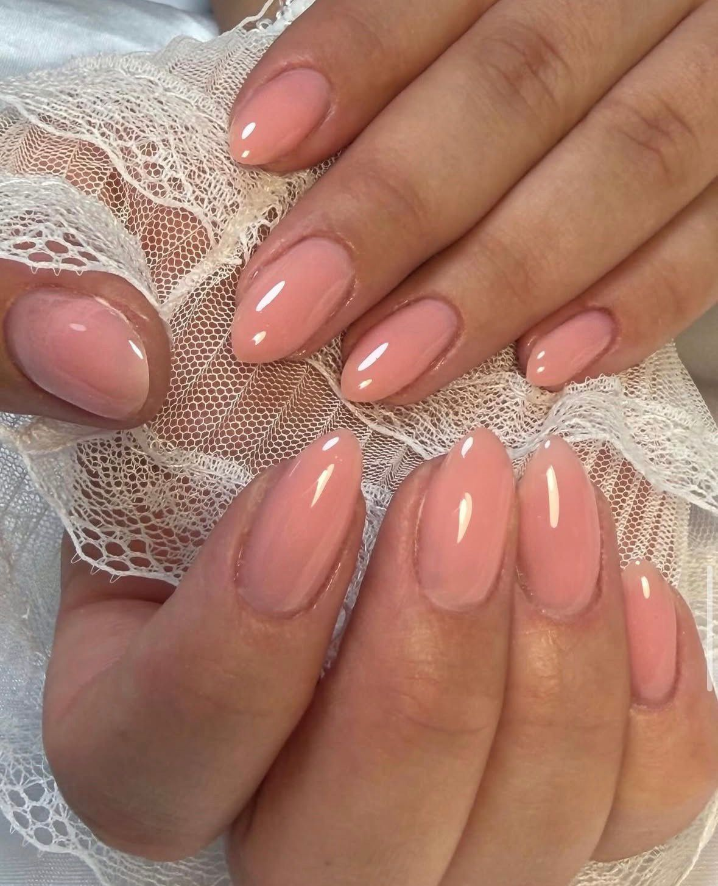
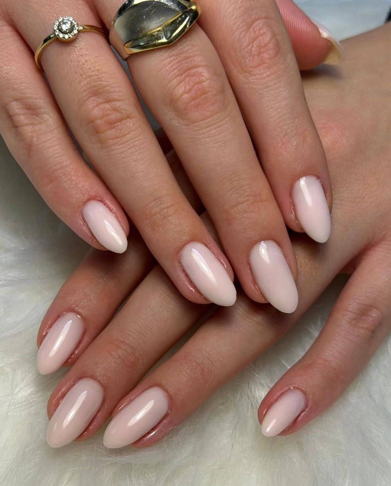
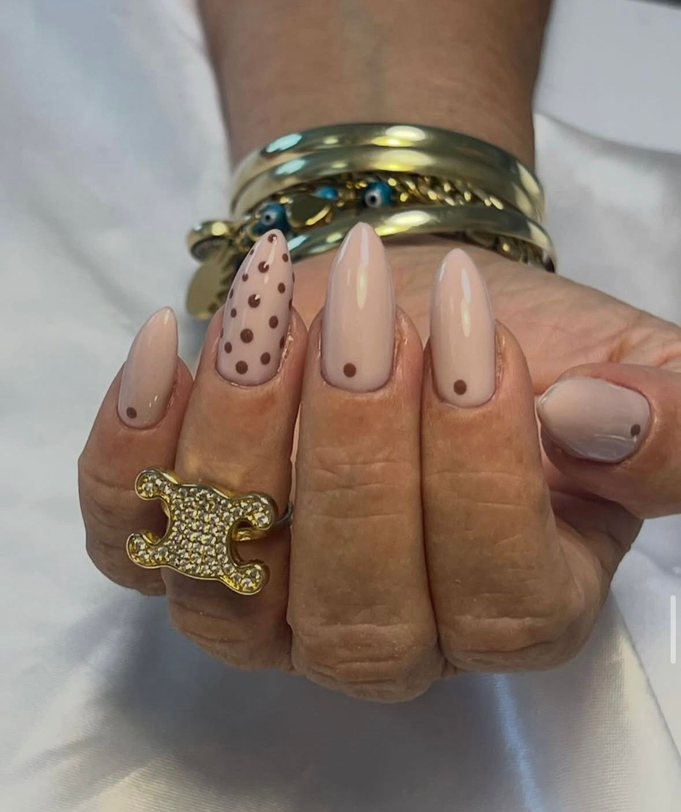
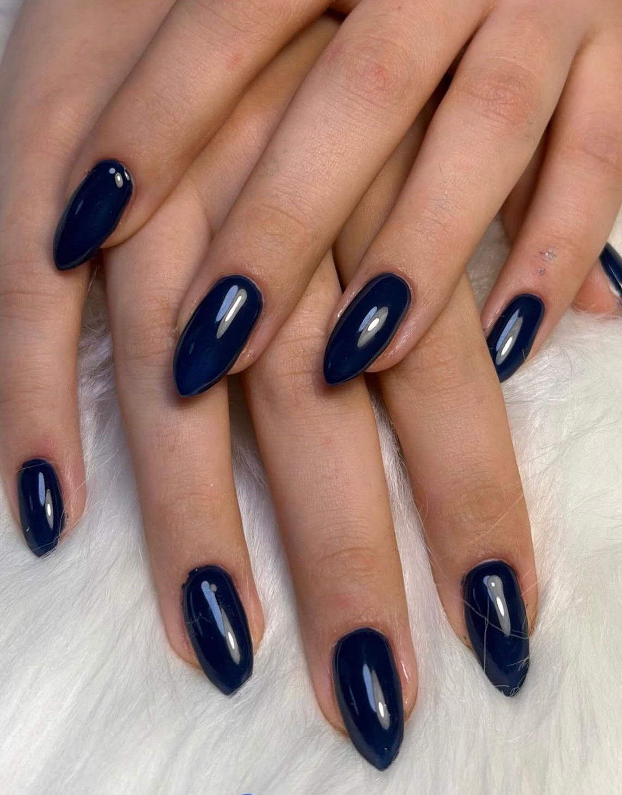
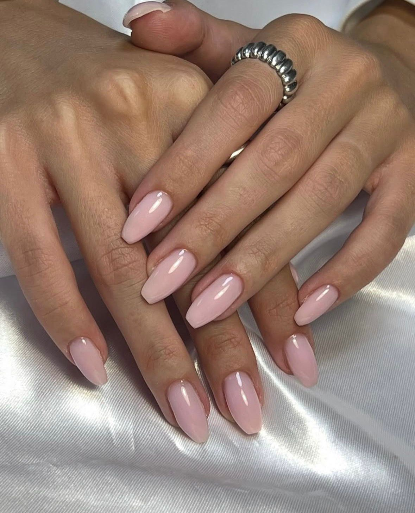
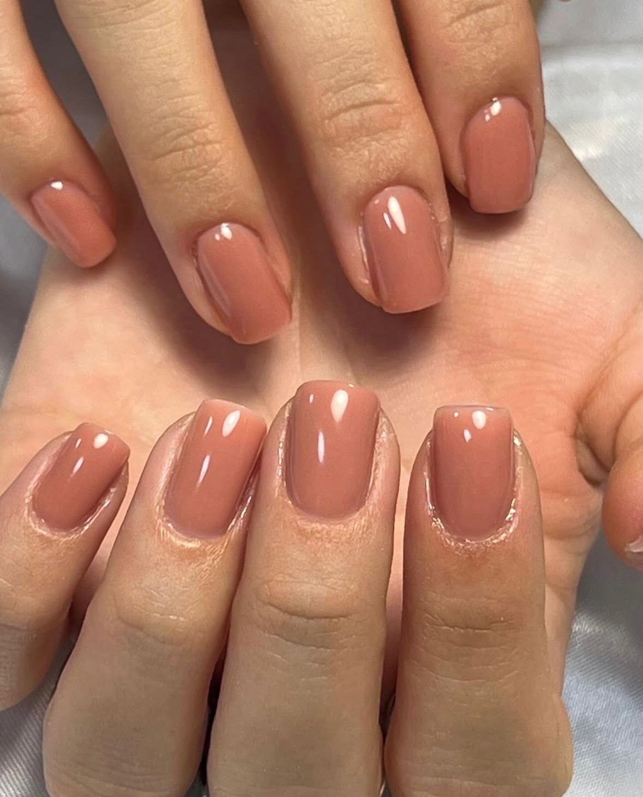
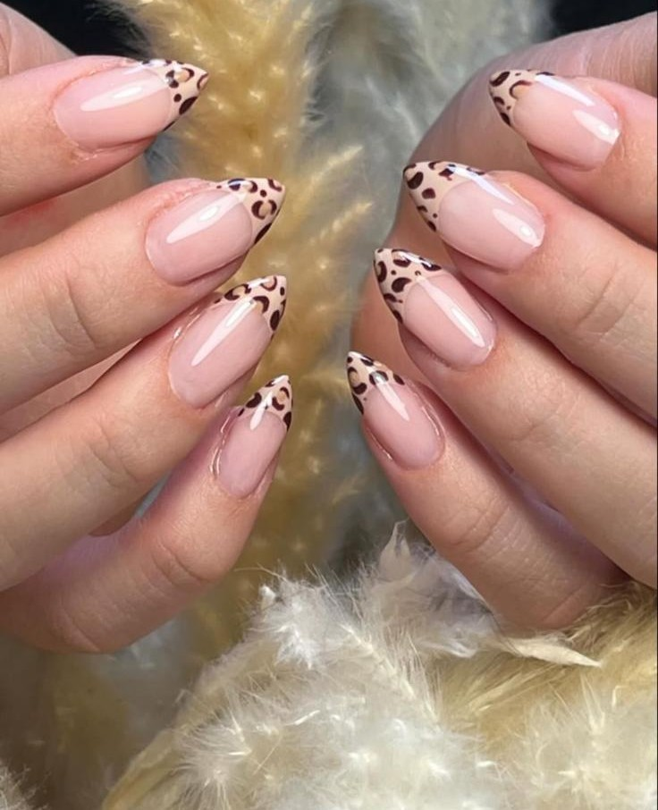
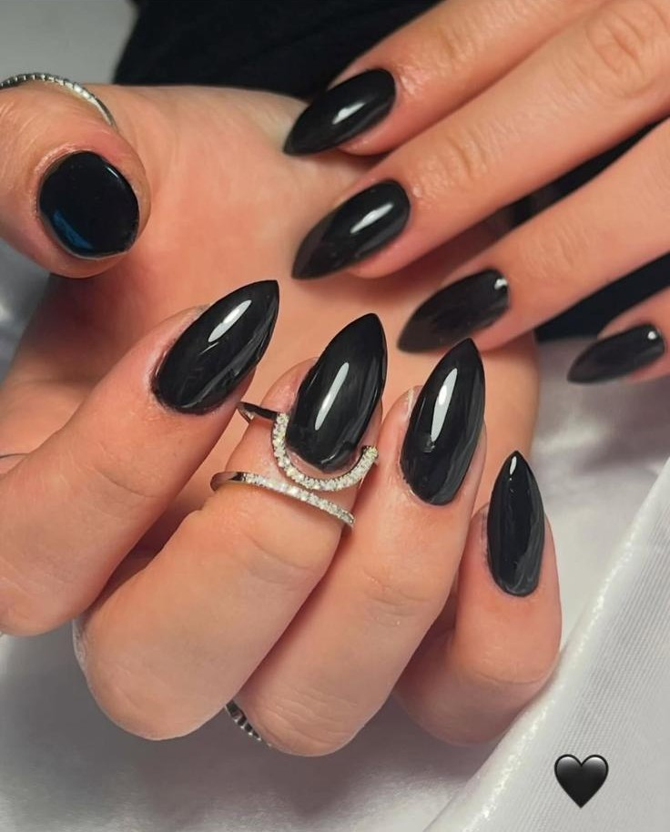
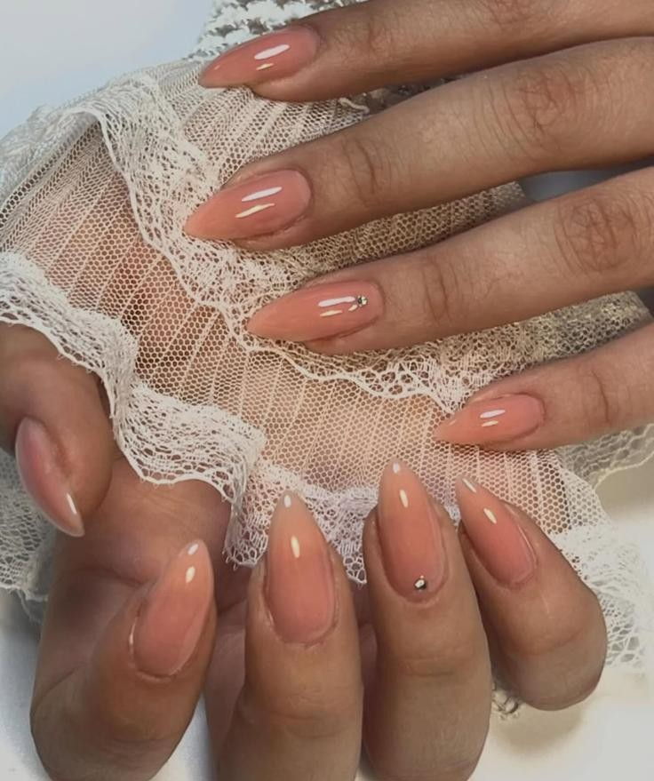

אודות מירי ניילס
ברוכות הבאות למירי ניילס 🌸
שירותי מניקור מקצועי, לק ג'ל, מילוי ציפורניים ובניית ציפורניים לידיים — בטבריה וסביבתה.
מירי אוחנה — בעלת ניסיון עשיר בתחום טיפוח הציפורניים, מתמחה בלק ג'ל מבנה אנטומי, מילוי ציפורניים, בניית ציפורניים בטיפס ג'ל, וניל ארט ייחודי.
במירי ניילס, כל לקוחה מקבלת יחס אישי ותשומת לב מלאה לפרטים הקטנים ביותר. העבודה מתבצעת בדיוק ובמקצועיות, תוך שימוש בחומרים איכותיים ובטכניקות מתקדמות.
💍 ציפורניים לאירועים מיוחדים
מירי מתמחה גם בציפורניים לאירועים — כלות, בנות מצווה ואירועי שמחה בטבריה. מוזמנות לתאם תור מוקדם לאירוע שלכן.
⏰ כל השירותים בתיאום תור מראש בלבד, על מנת להבטיח זמינות מלאה ושירות ברמה הגבוהה ביותר.
השירותים שלנו
מניקור ידיים
מניקור מקצועי ומלא לידיים — עיצוב וטיפוח הציפורניים, דחיקת עור, ומריחת לק לגימור מושלם. מתאים לציפורניים טבעיות בכל אורך.
לק ג'ל עם מבנה אנטומי
מריחת לק ג'ל איכותי ועמיד על ציפורניים טבעיות, עם מבנה אנטומי מדויק המחזק ומגן על הציפורן. מחזיק 2–3 שבועות.
מילוי ציפורניים
מילוי מקצועי לציפורניים בנויות בטיפס ג'ל — שומר על הציפורן חזקה, אחידה ומטופחת לאורך שבועות.
בניית ציפורניים בטיפס ג'ל
בניית והארכת ציפורניים בשיטת טיפס ג'ל — למראה טבעי, חזק ועמיד לאורך זמן. מתאים גם לכוססות ציפורניים.
ניל ארט ועיצוב ציפורניים ייחודי
ניל ארט בהתאמה אישית — אומברה, מניקור פראנץ', עיצובי שיש, אבנים נוצצות, הדפסים ועיצובים אומנותיים ייחודיים לכל אצבע.
השלמת ציפורניים שבורות
תיקון והשלמה מקצועית לציפורניים שבורות או פגומות, עם החזרת המראה והחוזק המקורי.
הסרת לק ג'ל
הסרה בטוחה ועדינה של לק ג'ל — ללא שיוף אגרסיבי, ללא נזק לציפורן הטבעית.
מחירון
| שירות | מחיר משוער |
|---|---|
| לק ג'ל על ציפורניים טבעיות | החל מ-150₪ |
| לק ג'ל כולל מבנה אנטומי | החל מ-170₪ |
| מילוי ציפורניים | החל מ-120₪ |
| בניית ציפורניים (טיפס ג'ל) | החל מ-250₪ |
| ניל ארט / קישוט לציפורן | החל מ-20₪ לציפורן |
| הסרת לק ג'ל | החל מ-60₪ |
| השלמת ציפורן שבורה | לפי בקשה |
* המחירים להמחשה בלבד ועשויים להשתנות לפי אורך, עיצוב ומורכבות. לפרטים מדויקים — צרו קשר.
גלריית ניל ארט ועיצובים















רוצות לראות עוד מהעבודות שלנו? 📸
שאלות נפוצות
קבעי תור עכשיו!
מוכנה לציפורניים מושלמות? 💅
חשוב! כל השירותים בתיאום תור מראש בלבד
רחוב אחד העם, טבריה
בתיאום תור מראש